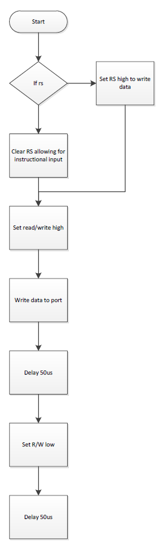
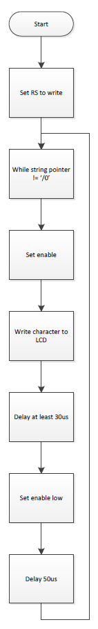
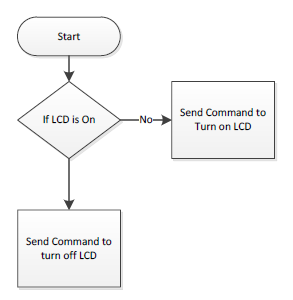
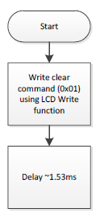
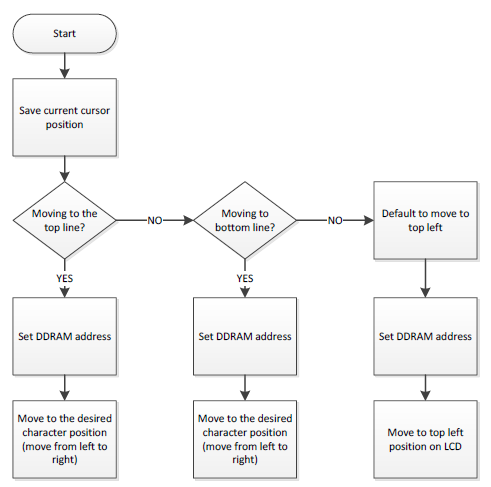
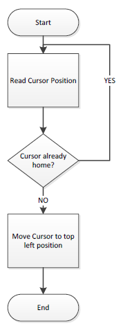
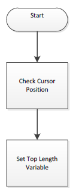
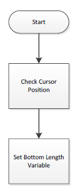

vLCD_INITIALIZATION()

Figure 1 - LCD Initialization Function Flowchart
vWRITE_COMMAND_TO_LCD()

Figure 2 - LCD Write Function Flowchart
vLCD_WRITE_STRING(string)

Figure 3 - LCD Write String Function Flowchart
vLCD_ON_OFF()

Figure 4 - LCD On/Off Function Flowchart
vLCD_CLEAR()

Figure 5 - LCD Clear Function Flowchart
vLCD_CLEAR_TOP()

Figure 6 - LCD Clear Top Line Function Flowchart
vLCD_CLEAR_BOTTOM()

Figure 7 - LCD Clear Bottom Line Function Flowchart
vLCD_GO_TO_POSITION(x,y)

Figure 8 - LCD Go To Position Function Flowchart
vLCD_HOME_TOP_LINE()

Figure 9 - LCD Home Top Line Function Flowchart
vLCD_HOME_BOTTOM_LINE()

Figure 10 - LCD Home Bottom Line Function Flowchart
vLCD_GET_TOP_LENGTH()

Figure 11 - LCD Get Top Length Function Flowchart
vLCD_GET_BOTTOM_LENGTH()

Figure 12 - LCD Get Bottom Length Function Flowchart
xLCD_GET_LENGTH()

Figure 13 - LCD Get Length Function Flowchart
 1.8.5
1.8.5